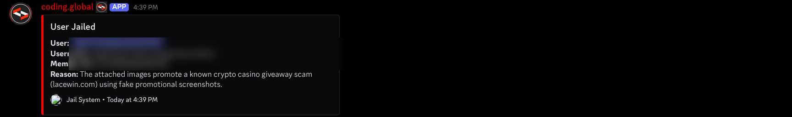

coding.global - Privileged Intent Review Evidence
Application ID 1314569825657421845 · Coding [EN/DE] · ~25,000 members ·
single private server, not publicly distributed
Why this page exists
The intent request form asks for a link to screenshots demonstrating each use case.
This bot runs in one private community server and has no public invite or demo
instance, so this page hosts evidence captured from the live server instead.
Member IDs and usernames are blurred. The bot's own detection reasoning is left
fully visible, since that is what demonstrates the use case.
Message Content Intent
AI scam classification on message attachments
Our server is a sustained target of crypto-casino and phishing campaigns. When a
member posts for the first time, the bot passes the message text and any attached
images to a classifier. Below, the bot identified promotional screenshots for a
known crypto casino giveaway scam and jailed the account automatically.

Live capture from #community-updates. The detection reason is generated by the bot
from the message content and its attachments.
This cannot be done with the AutoMod API. AutoMod allows 10 regex patterns of 260
characters per rule, which cannot express multi-layer invite de-obfuscation, and it
cannot classify the contents of an image. Per Discord's own documentation the
AUTO_MODERATION_ACTION_EXECUTION event requires the
MESSAGE_CONTENT intent to populate its content and
matched_content fields, so AutoMod cannot even report what it blocked
without this intent.
Message Content Intent
Forum post template validation and scam screening
Posts in our job-board, dev-board and showcase forum channels are validated against
a required template and screened for scam patterns. In the last 24 hours this
removed two posts: one matching Upwork account-renting patterns, and one offering
"passive income" for running software on an unused computer, a common botnet or
proxy recruitment pattern. Both were rated HIGH scam risk with the missing template
fields itemised, and the poster was DMed an explanation.
Implementation:
thread-create.handler.ts
Server Members Intent
Jail, verification and role synchronisation
We use guildMemberAdd, guildMemberRemove and
guildMemberUpdate for:
- The moderation jail role, which strips a rule-breaker's roles and confines them to one channel. This fired 15 times in a single 11-minute window during a coordinated image-spam raid.
- The verification system for new members.
- Activity-based level roles and helper-rank roles, reconciled against our database so state stays correct even if a change happens while the bot is offline.
- Join and leave logging, which moderators use to identify raid waves and repeat offenders, and live member-count channels.
The documented alternatives do not cover this. Get Guild Member and
Search Guild Members are pull-based lookups, and interaction payloads
only carry member data for users who invoke a command. None of them deliver join,
leave or role-change events, and our raid response depends on reacting to a member
joining rather than polling for it.
Implementation:
delete-user-messages.service.ts
Presence Intent
Public community widget and activity statistics
Our public website renders a live widget listing which members are currently online,
so visitors can see who is available to help, and our /me and
/top commands show per-member activity statistics used by community
leaderboards.
approximate_presence_count on the guild object returns an aggregate
number only, which cannot express which specific members are online. We store a
single current status value per member and do not retain presence history. Members
can opt out entirely with /privacy, which stops collection and clears
their stored presence data.
Implementation:
widget.routes.ts
Data handling
- Self-hosted PostgreSQL on a LUKS2-encrypted volume (aes-xts-plain64, 512-bit key).
- We store member IDs, usernames, nicknames, role assignments and message counts.
- Message text is retained only for moderation audit of removed messages and for forum post content. Ordinary chat is processed in memory and discarded.
- Text is sent to the Google Gemini API for classification only and is not used to train any model by us.
- Members can opt out at any time with
/privacy, which immediately purges their stored data.
- Privacy policy: coding-global.com/en/privacy